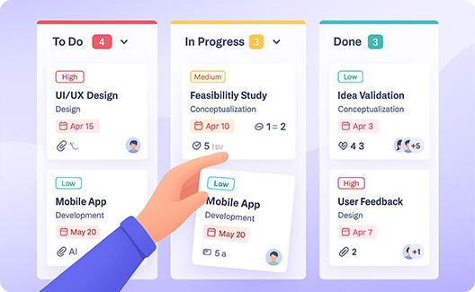
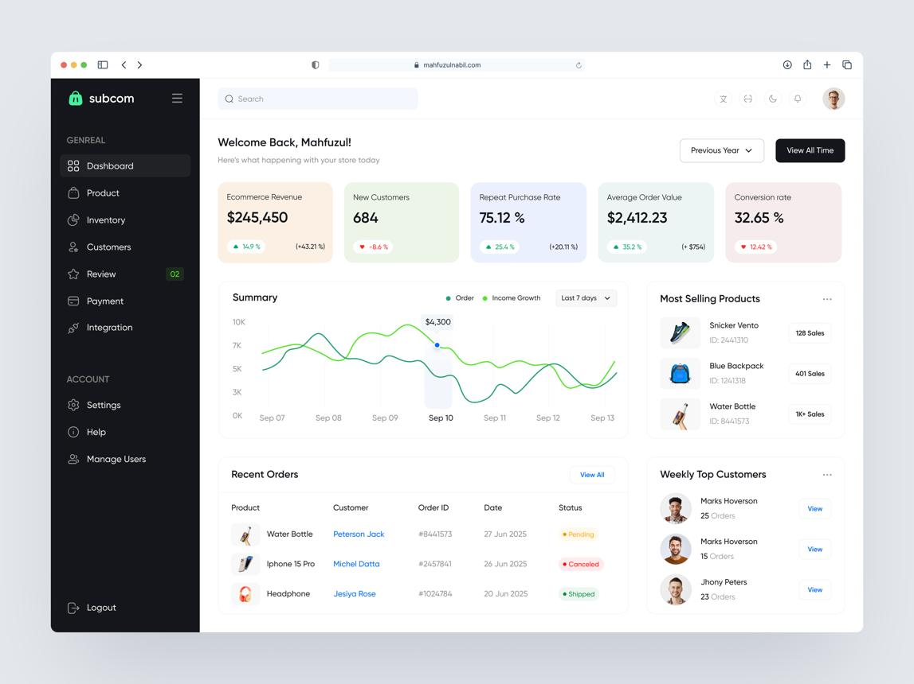
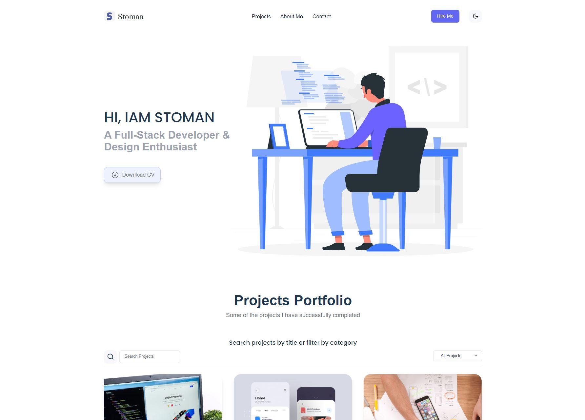
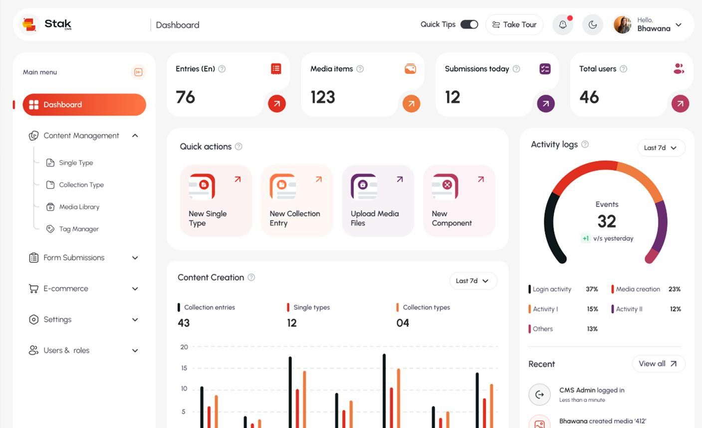
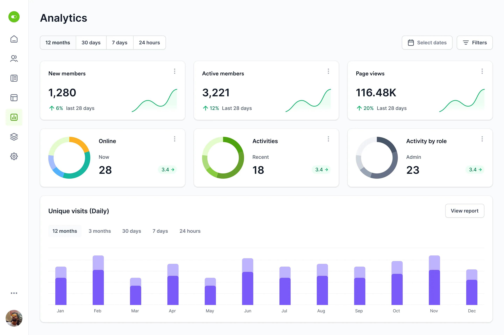

Task Flow Management is a modern productivity application designed to help individuals and teams organize, track, and manage daily tasks efficiently. It provides an intuitive dashboard where users can create tasks, assign priorities, set deadlines, monitor progress, and collaborate with team members in real time. With features such as Kanban boards, task categories, status tracking, notifications, and progress analytics, the application improves workflow management and ensures projects are completed on time. The responsive and user-friendly interface delivers a seamless experience across desktop and mobile devices, making task organization simple, efficient, and productive.

The E-Commerce Platform is a full-featured online shopping application that enables customers to browse products, add items to their cart, and complete secure purchases with ease. The platform includes product search, category filtering, user authentication, order management, and payment integration to provide a seamless shopping experience. Designed with a responsive and user-friendly interface, it ensures smooth navigation across desktop and mobile devices while helping businesses manage products, inventory, and customer orders efficiently.

The Freelance Portfolio is a professional web application that showcases a freelancer's skills, projects, services, and achievements in an engaging and visually appealing manner. It helps clients explore completed work, read testimonials, and contact the freelancer through integrated communication forms. Built with a responsive layout, the portfolio strengthens online presence and makes it easier to attract potential clients and business opportunities.

The Content Management System (CMS) is a web-based application that enables users to create, edit, organize, and publish digital content without requiring technical expertise. It provides a centralized dashboard for managing pages, blog posts, media files, and user roles. The system simplifies website administration by offering an intuitive interface, content scheduling, and secure access control, making website management faster and more efficient.

The Community Tracker is a web application designed to manage community activities, members, and events from a centralized platform. It allows administrators to monitor participation, organize events, share announcements, and track member engagement through real-time reports. With an intuitive interface and responsive design, the system promotes effective communication, collaboration, and efficient community management.

Jump to Objectives Quick Info TechnologyProgress